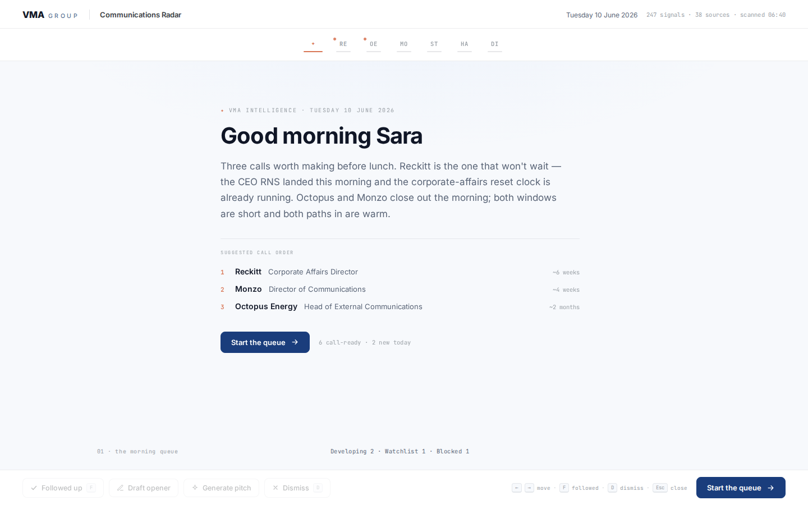
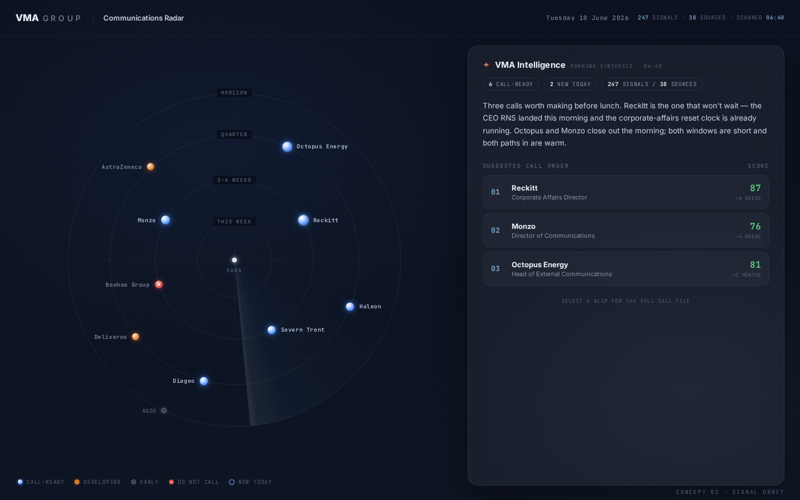
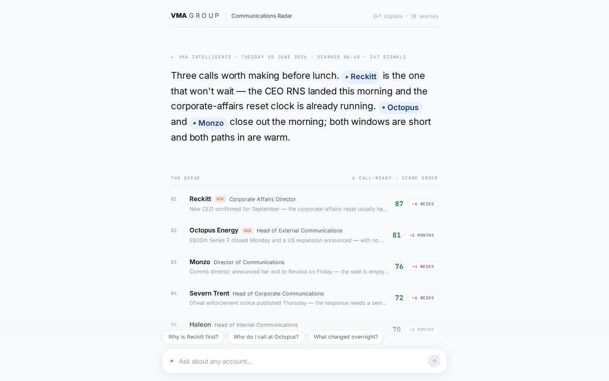
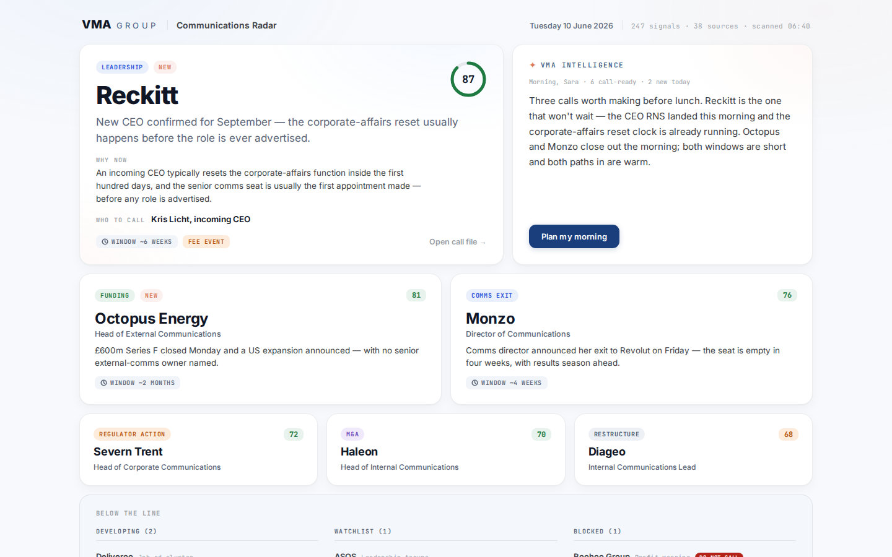
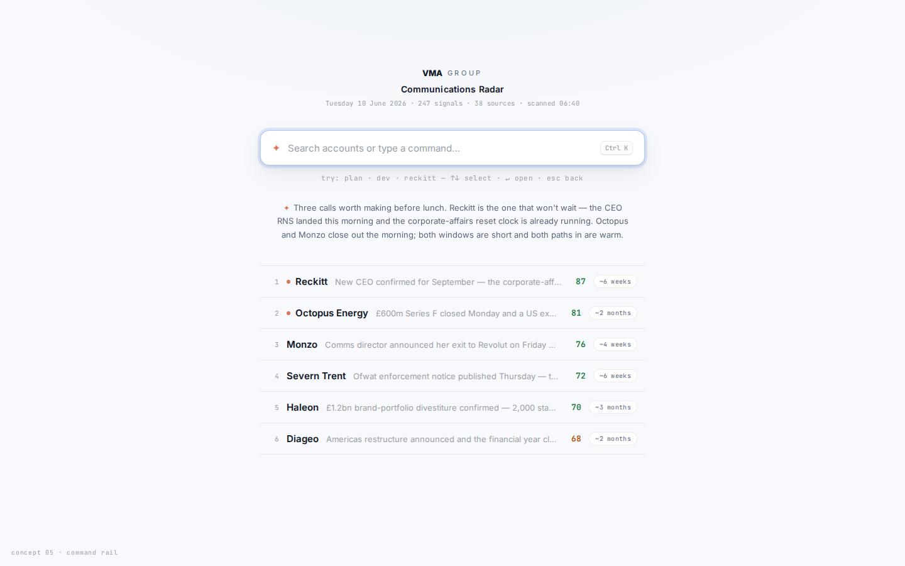
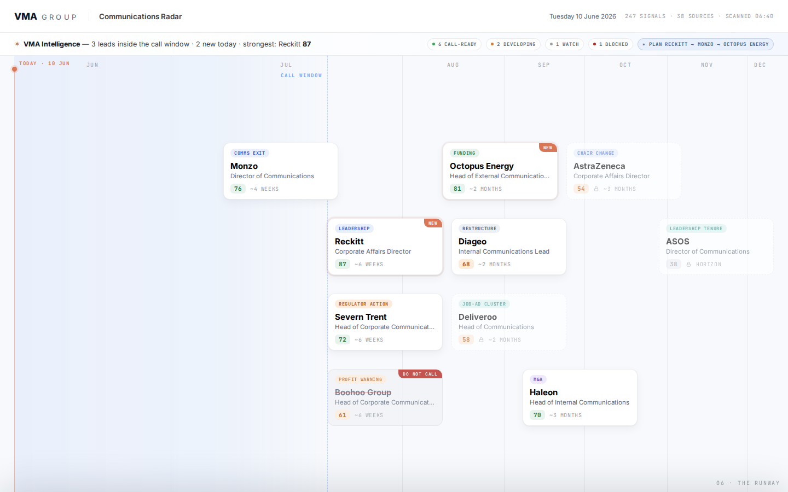
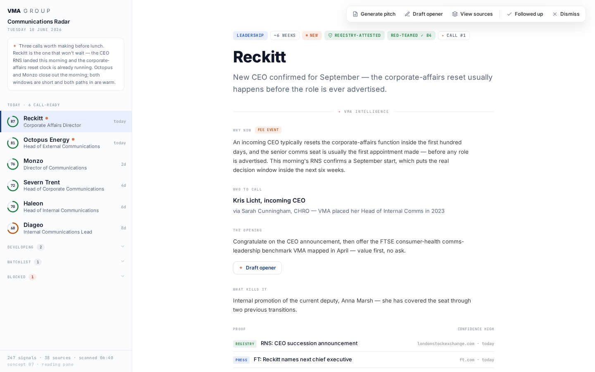
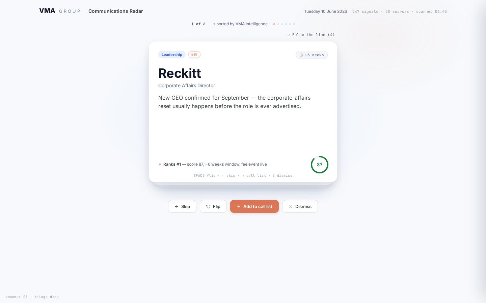
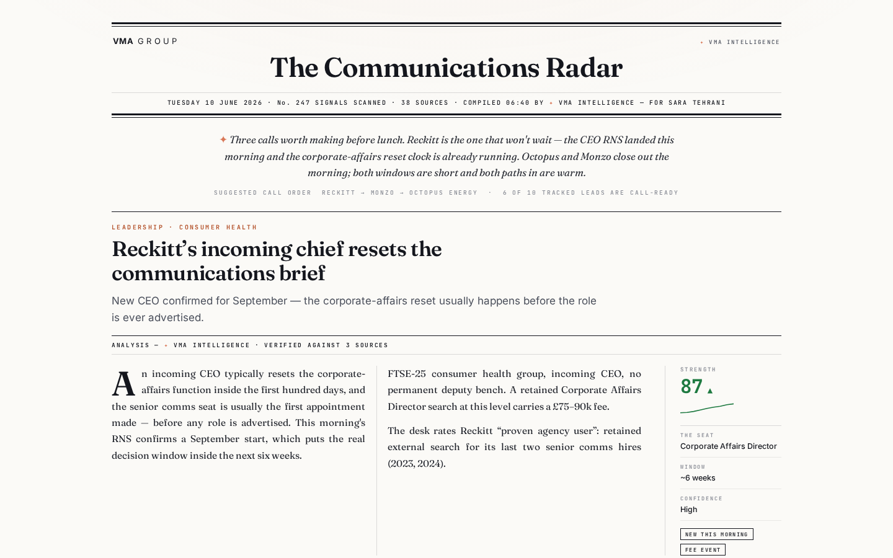
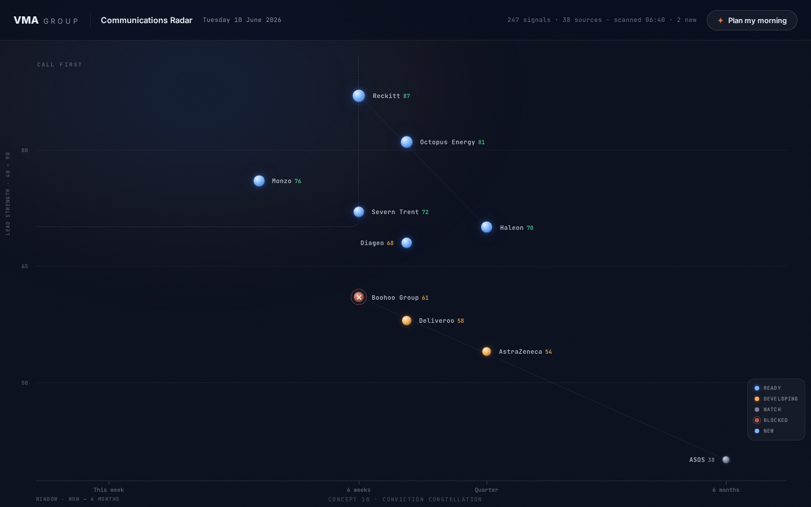

Ten reimaginings of the radar page, built to one brief: minimalist at rest, complete on demand. Every lead opens into the full call file — why now, who to call, the opening, what kills it, the proof and the numbers — and nothing else fights for attention until it's asked for. Same live data contract, ten very different mornings.









